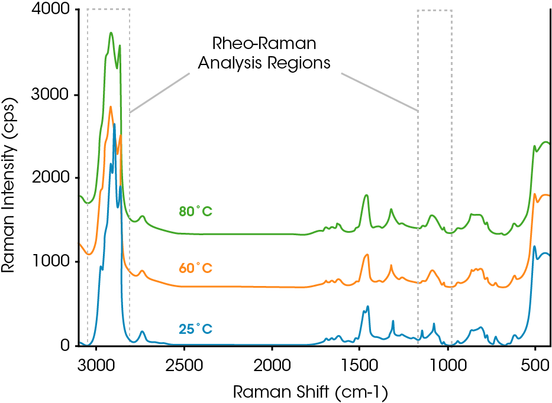
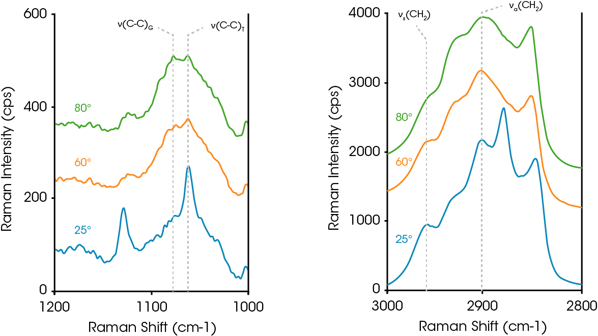
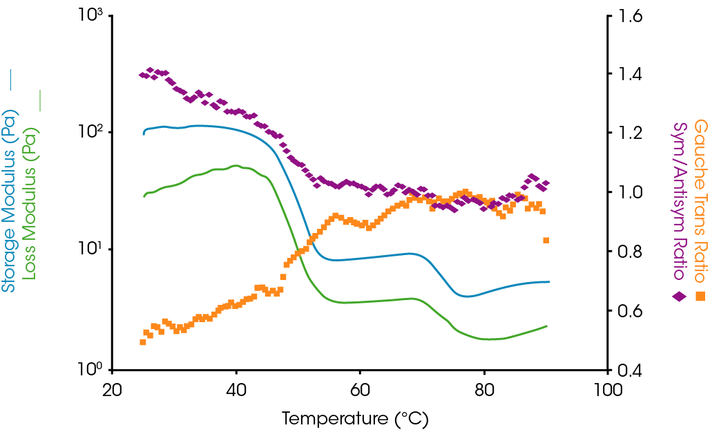

The new Rheo-Raman Accessory for the Discovery Hybrid Rheometers allows for simultaneous collection of Raman spectroscopy data during rheology experiments. Raman spectroscopy is a technique that provides critical information about molecular structure and bonding and can elucidate intermolecular interactions of pure components and mixtures. This includes information about a material’s crystallinity and conformational order. The Rheo-Raman Accessory from TA Instruments integrates with the iXR Raman Spectrometer from Thermo Fisher Scientific to provide a turnkey, safe system with Class 1 laser certification.
The direct link between the thermally initiated changes in molecular order and flow properties is examined for a cosmetic lotion. The sample was heated at 1°C/min from 25 °C to 90 °C – the rheology was monitored through an oscillatory test and the Raman spectra were simultaneously recorded.
Effect of Temperature on Rhaman Spectra

The effect of temperature on the sample spectra is summarized in the plots above. Significant changes were observed in two specific regions of the spectra and the following peaks were identified for further analysis.
- C-C Gauche/ Trans peaks (1060 cm-1/ 1080 cm-1)
- CH2 Symmetric/Antisymmetric stretch peaks (2960 cm-1, 2904 cm-1)
The ratio of the peak intensities – Gauche to Trans, and Symmetric to Antisymmetric – characterize the chain conformation and crystalline order in the sample.
Rheo-Rhaman Analysis Regions

The Rheo-Raman results from the temperature ramp test are shown in the plot above – the data display excellent agreement between bulk rheology and chemical structural changes. As the lotion is heated, the storage and loss moduli drop significantly. This is accompanied by reduction in the Symmetric/Antisymmetric peak ratio and a concurrent increase in the number of Gauche conformers.
Together, the changes in the Raman spectra reveal an increase in chain mobility and a transition to amorphous content, consistent with the melting of cetyl alcohol and the sample rheology. This example demonstrates the effectivity of Rheo-Raman analysis to specifically correlate chemical structural changes with rheology, enabling formulators to prescriptively tune the product performance through its chemical composition.
Quantitative Rheo-Rhaman Analysis
